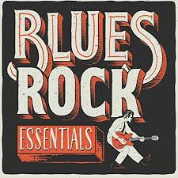

História do funk
O funk no Brasil é um gênero musical que surgiu nas periferias do Rio de Janeiro e São Paulo no final dos anos 1970 e início dos anos 1980. Combinando elementos do funk norte-americano, hip-hop, soul e rap com ritmos brasileiros, como samba e tamborim, o gênero se popularizou nos anos 1990. Enfrentando críticas por letras polêmicas, o funk evoluiu nas décadas seguintes, incorporando estilos mais festivos. A disseminação da internet levou o funk brasileiro a ganhar projeção internacional, tornando-se uma parte significativa da identidade musical do país.
Principais artistas dos anos 90
MC Marcinho
MC Cidinho & Doca
Bonde do Tigrão
MC Leozinho
George Thorogood
Geração do Funk
Melhores Hists dos anos 90
"Rap da Felicidade" - MC Cidinho & Doca
"Rap do Solitário" - MC Marcinho
"Rap da Diferença" - MC Duda do Marapé
"Rap da Comunidade" - MC Primo
"Rap das Armas" - Cidinho & Doca